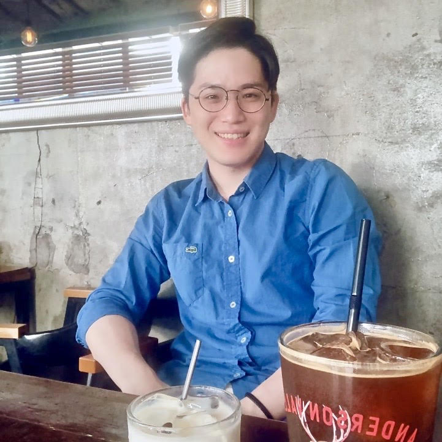

Pronounced as [Young] [Hoon]
I am a fifth-year Ph.D. student in Computer Science at Purdue University. My research focuses on Natural Language Processing, Computational Social Science, Representation Learning, and Explainable AI. Specifically, I am interested in discourse analysis within various domains including hate speech, subjective preference, counseling conversations, etc., and systematic approaches to represent discourse more effective and explainable to humans as well as to Large Language Models. I am advised by Professor Dan Goldwasser from Purdue NLP Group.
[cv] [google_scholar] [linkedin]
Selected Publications
- Younghun Lee and Dan Goldwasser. "Towards Explaining Subjective Ground of Individuals on Social Media." Findings of EMNLP 2022 [link]
- Younghun Lee, Dan Goldwasser, and Laura Schwab Reese. "Towards Understanding Counseling Conversations: Domain Knowledge and Large Language Models" Findings of EACL 2023 [link]
- Younghun Lee, Seunghyun Yoon, and Kyomin Jung. "Comparative Studies of Detecting Abusive Language on Twitter." EMNLP 2018 Workshop (ALW2) [link]
- Younghun Lee, Sungchul Kim, Ryan A. Rossi, Tong Yu, and Xiang Chen."Learning to Reduce: Towards Improving Performance of Large Language Models on Structured Data" ICML 2024 Workshop on Long-Context Foundation Models [link]
- Tianqi Wang, Lei Chen, Xiaodan Zhu, Younghun Lee and Jing Gao. "Weighted Contrastive Learning With False Negative Control to Help Long-tailed Product Classification." ACL 2023 Industry Track [link]
- Hou Wei Chou, Younghun Lee, Lei Chen, Yandi Xia, Wei-Te Chen. "CamemBERT and BiT Feature Extraction for Multimodal Product Classification and Retrieval." SIGIR2020 eCom [link]
Work Experience
- (Summer 2024) LG AI Research, Research Intern
- (Summer 2023) Adobe, Research Scientist/Engineer Intern
- (Summer 2020) Rakuten Institute of Technology, Research Science Intern
Previous Teaching
- (Fall 2022) CS57100 - Artificial Intelligence
- (Spring 2022) CS57300 - Data Mining
- (Fall 2021) CS24200 - Introduction To Data Science
- (Fall 2019-Spring 2021) CS18200 - Foundations of Computer Science
Contact
Purdue University
Department of Computer Science
305 N University St
West Lafayette, IN 47907
younghun AT purdue DOT edu